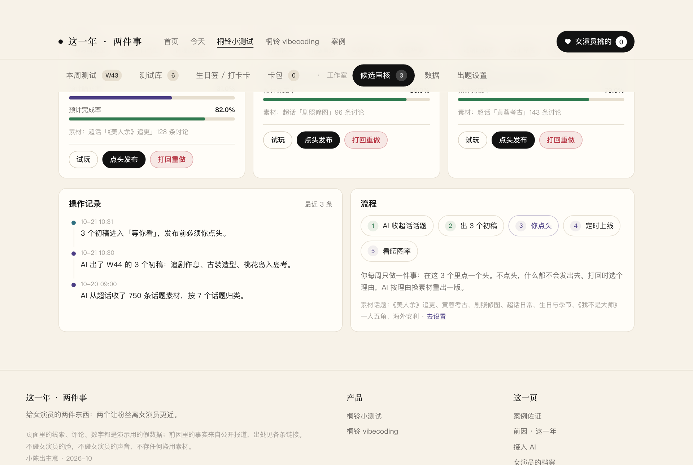
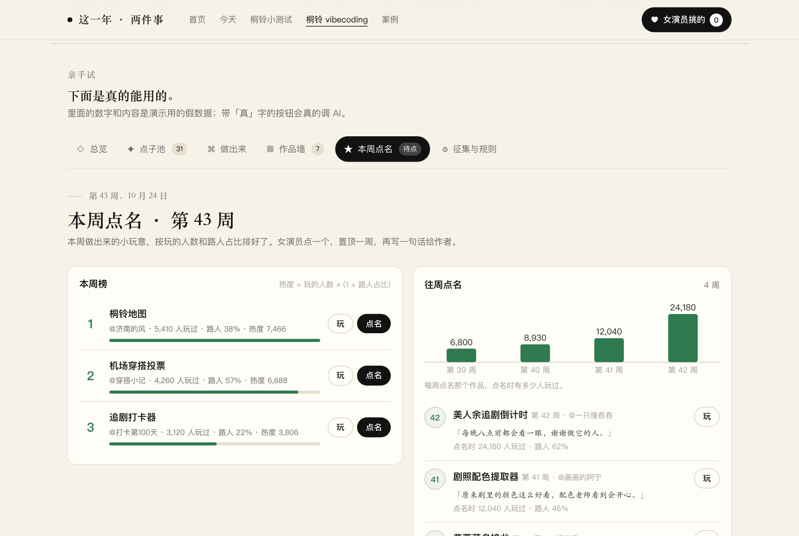
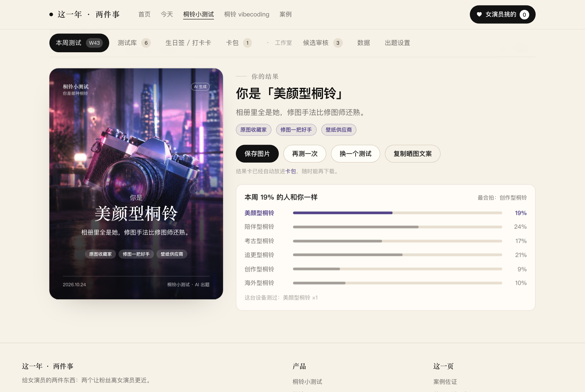
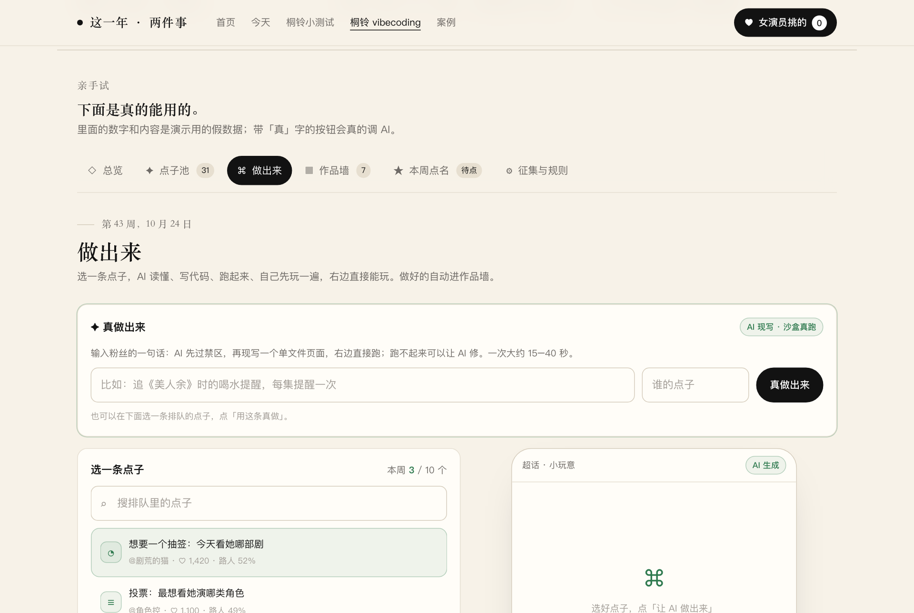

她那边是一键。起步要人准备，准备的不是她。
先回答最常问的三个问题，再按人分工，再说第一周。
三个问题
是一键生成吗？ 出东西是。小测试：填一句本周剧情（也可以不填），点「真出一套」，5 到 20 秒出 8 道题和结果卡。小玩意：填粉丝的一句话，点「真做出来」，15 到 40 秒跑起来。发到超话不是一键，要团队的人手发；页面上的人数、晒图率现在是演示假数据，真数据要跑起来后人工回填。
她要准备什么？ 什么都不用。不装软件，不注册，不记网址。每周两次有人把链接发到她微信，点开只有那一页。
怎么上手？ 当面做一次。她亲手点「开始测试」玩一遍、点一次「点头发布」、点一次「点名」，三下做完就上手了，以后每周就是其中两下。
按人分工
| 谁 | 开始前准备 | 每周做什么 | 一键吗 |
|---|---|---|---|
| 女演员 | 不用准备 | 周四看 3 张测试初稿，点一次「点头发布」；周日看 3 个小玩意，点一次「点名」，写一句为什么喜欢 | 是，各一下 |
| 泡泡团队 | 接入 AI 钥匙，约 1 分钟；填档案：在播剧、更新日、禁区词，约 5 分钟；从超话收 20 条桐铃最爱聊的话题 | 让 AI 出 3 套初稿、做 3 个小玩意；人工复核禁区；把链接发超话；周四、周日把链接发她微信；回填数据 | 出稿一键，发超话和收数据靠人 |
| 工作室 | 给一个对接人（桐话小广播那边） | 她进组顾不上的那周，由对接人代点，或顺延一周 | — |
钥匙只存在那台设备的浏览器里，不上传，不截图，不发群。断网时两件东西自动退回演示数据，不会坏，但「现场真出」就没了，当面演示要带手机热点。
她的两下，长这样
周四 · 点头 三张初稿摆在面前，每张写着标题和前三道题。喜欢的点 点头发布，不像桐铃会说的话点「打回重做」，选个理由，AI 换一版。不点，三张都不发。

周日 · 点名 本周做好的小玩意按玩的人数排好。先点「玩」试两下，喜欢的点 点名，写一句话给出点子的粉丝。被点名的置顶一周。

当面演示怎么跑 两样各一次，她亲手拿到一个结果
小测试 打开 候选审核，请她说一句《美人余》本周剧情，泡泡填进去，点「真出一套」。等 5 到 20 秒，一套新题出来。她点「试玩」，答 8 题，出结果卡，点「保存图片」。

小玩意 打开 做出来。先故意填一句带「用李一桐声音」的，让她看系统拒绝并写出理由；再请她随口说一句想要的，点「真做出来」。等 15 到 40 秒，右边跑起来，她玩两下。

第一周
| 谁 | 小测试 | 小玩意 |
|---|---|---|
| 团队 | 从超话收 20 条桐铃最爱聊的话题，当出题素材 | 在超话发一条征集：「想要什么小玩意，说一句话就行」 |
| AI | 出 3 个测试初稿，每个配一张结果卡 | 挑 3 个点子做成能直接打开的小页面 |
| 女演员 | 周四挑一个点头，周五晚八点上线，看有多少人晒 | 周日点名一个，说一句为什么喜欢 |
跑多久、看什么
先跑一个季度，12 周，正好覆盖《美人余》热播期；按月结，随时可停。验收看三个数：每周结果卡在超话的晒图次数、每个小玩意的试玩人次、试玩的人里非超话常驻粉丝的占比。报价【待定】。
她会担心的三件事
| 会不会用到脸和声音 | 系统里写死了：涉及脸、声音、行程、工作、拉踩别人的点子一律不做，并写出理由。当面演示时故意试一句，让她亲眼看它被拦。所有发出去的东西标「AI 生成」。 |
| 进组太忙顾不上 | 工作室对接人代点，或那一周顺延。断更不会出事，因为不点头就什么都不发。 |
| 粉丝觉得全是 AI、不真诚 | 题目从桐铃自己的话里来，点子是桐铃提的，挑中哪一个是女演员亲手点的。AI 只做中间那段。 |
红线：不用她的脸和声音；不碰她的工作；不收集粉丝个人信息。截图取自 2026-10-24 本地两件事版站点；线上公开链接仍是旧的四件事版。